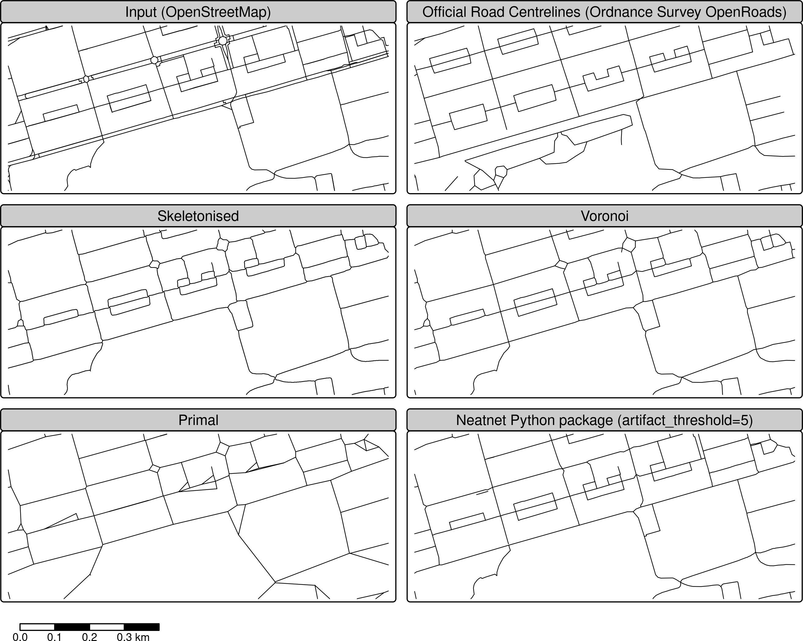
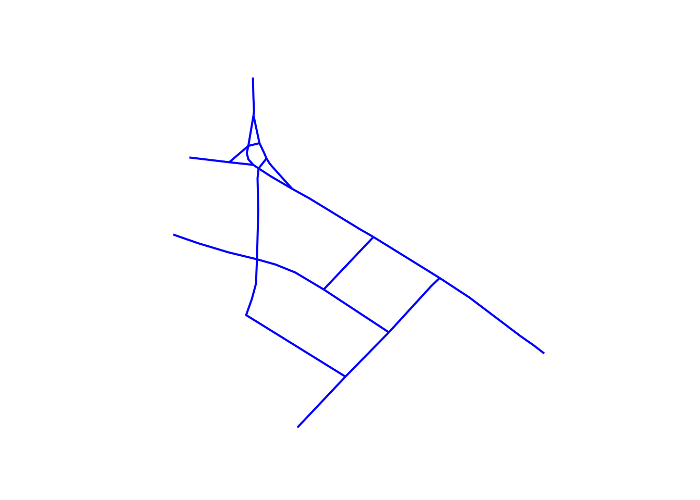
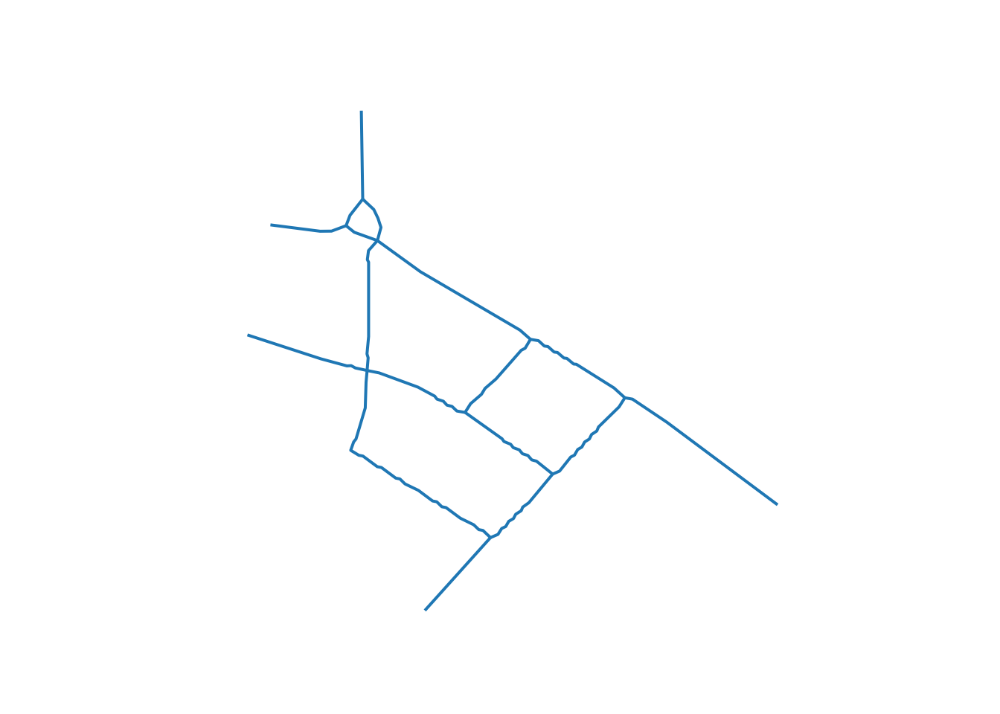
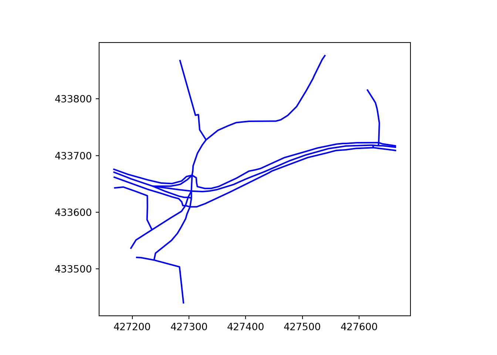
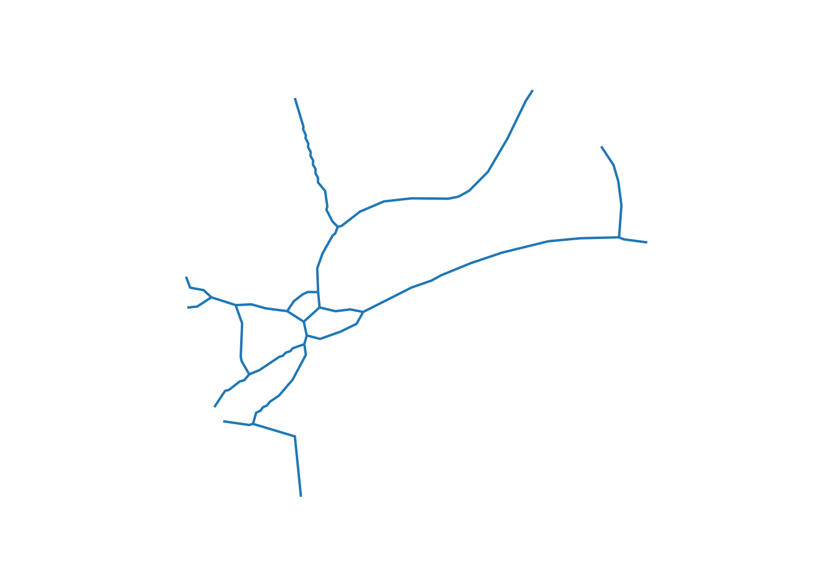

Route network simplification for transport planning
Will Deakin ![]()
Zhao Wang
Josiah Parry
Robin Lovelace
Abstract
Route network datasets are fundamental to transport models, serving as both inputs for analysis and outputs for visualisation and decision-making. The increasing complexity of route network data from sources like OpenStreetMap allows for more detailed modelling of sustainable transport modes such as walking and cycling. However, this level of detail can introduce challenges for the clear visualisation and interpretation of model results. A common problem is the representation of single transport corridors by multiple parallel lines, which can create visual clutter and obscure important patterns in transport flows. The purpose of the work presented in this paper is to provide a basis for computationally efficient analysis and visualisation of route networks for strategic transport planning, where intricate geometries, such as parallel or ‘braided’ linestrings, are unhelpful. We present and evaluate two distinct methods for simplifying complex route networks that are intended to be used as a ‘pre‑processing’ step to speed up and improve the results of strategic transport network analysis, modelling and visualisation workflows. First, we present skeletonisation, an approach that uses ‘thinning’ of rasterised network data to extract a simplified representation of the network. Second, we present a Voronoi‑based approach using Voronoi diagrams to identify centrelines. We demonstrate the practical application of these methods using the “Simplified network” layer in the Transport for Scotland funded Network Planning Tool, a publicly accessible resource at www.npt.scot. To support reproducible research, we implement the methods in the open-source parenx Python package, enabling their use alongside other open source tools for transport planning, research and educational applications.
1 Introduction
Datasets representing route networks are foundational to transport planning, serving a dual role as both inputs to and outputs from transport models. As inputs, they provide the digital representation of the physical world on which transport systems operate. As outputs, they are used to visualise the results of transport models, for example showing levels of predicted demand or network performance on specific routes. More specifically, transport network datasets are spatial networks composed of nodes (vertices or junctions) and edges (links or ways), where each edge has an associated cost, such as its length or travel time (Barthélemy 2011). In practice, these components are geographically located, with edges representing the physical infrastructure of the transport network, often enriched with attributes like the type of way (e.g., motorway, cycle path), its physical characteristics, and usage data such as daily traffic volumes. Accordingly, route network simplification can be applied to both input and output networks, aiming to reduce complexity while preserving the essential spatial structure and relevant attributes of the network.
In this paper (and associated code repository and Methods and Cookbook appendices), we articulate the problem of complex route networks, present two open‑source and reproducible simplification methods—skeletonisation and a Voronoi‑based centreline approach—and demonstrate their application to support more effective transport planning. The primary aim is to provide transport planners with tools to simplify complex route networks as a ‘pre‑processing’ step in existing transport modelling workflows. More broadly, we aim to contribute to wider multi-disciplinary efforts in spatial network analysis and network simplification.
To avoid ambiguity, we set out key terms and how they are used consistently in the paper. A spatial network is the abstract, graph-theoretic object embedded in geographic space (nodes and edges with geometry) (Barthélemy 2011). A transport network dataset is a concrete geospatial dataset typically saved as a vector geographic dataset in a GeoPackage (.gpkg), GeoJSON (.geojson), or similar geographic file format that encodes a spatial network representing linear transport infrastructure (Kujala et al. 2018). ‘Route network’ can be used interchangeably with transport network but the emphasis is on the travel demand on the network, which can be calculated by aggregating many routes (e.g., model outputs) into a consolidated set of corridors (Morgan and Lovelace 2020; Moral-Carcedo 2024). We reserve “spatial network” for statements about the underlying graph concept.
The growing availability of high-resolution geographic datasets, from open sources including OpenStreetMap (OpenStreetMap contributors 2024) and government-funded mapping agencies (Ordnance Survey 2025), has enabled the creation of increasingly detailed maps. This trend, powered by advances in hardware and software, is beneficial for sustainable transport planning, which relies on accurate and detailed network information. However, the very intricacy of modern street network geometries can create significant problems. For transport model outputs to be useful to planners and the public, a clear and intuitive visual representation is crucial for identifying issues such as bottlenecks, congestion hotspots, and areas of poor accessibility. Consequently, network simplification has become a vital step in the transport planning workflow, aligning with established cartographic principles of ‘map generalisation’ for pre‑processing datasets according to the scale of analysis (Sutton 1998). Despite being a long-standing challenge, the simplification of networks for transport planning and other applications remains an active area of research.
Existing vector geometry simplification methods, such as the Douglas-Peucker and Visvalingam-Whyatt algorithms, are effective at reducing the number of vertices in a line and thus file sizes, but they do not address the problem of network complexity arising from multiple parallel lines representing a single real-world corridor (Liu et al. 2020; Magalhaes et al. 2014). Similarly, vector smoothing techniques can improve the aesthetic quality of network visualisations; however, they do not simplify the underlying network structure (Pradhan and Pradhan 2023; Duong 2022).
A more promising approach involves converting the linear network into an intermediate polygon (buffer) layer and then deriving a simplified centreline, or ‘medial axis’. This concept has been explored in various open-source software implementations (e.g. Smogavec and Žalik 2012; “Centerline - Crates.io: Rust Package Registry” 2023). Recent work in this area includes the neatnet Python package (Fleischmann et al. 2025) and the parenx package (Deakin 2024), the latter of which forms the basis of the methods presented in this paper. Other related methods focus on identifying and removing specific types of network artefacts, such as small loops or ‘slivers’ between dual carriageways to simplify street blocks (Fleischmann, Vybornova, and Gaboardi 2024; Grippa et al. 2018). However, these methods often lack the flexibility to control the level of simplification.
While the focus of this paper is on route network simplification for transport planning, and applications to other fields are beyond its scope, it is worth noting prior research tackling the challenge of simplifying linear features in other domains. In hydrology, for example, researchers require simplified centrelines of rivers derived from datasets representing river banks for applications such as flood mapping and morphological analysis, with implementations in tools like the R package cmgo (Golly and Turowski 2017) and RivWidthCloud for Google Earth Engine (Yang et al. 2020). The riverdist R package also provides functionality to simplify braided river channels into a single path (Tyers 2016). The methods presented in this paper draw inspiration from these wider applications of linear feature simplification. More broadly, our approach is based on techniques that can be applied to any set of overlapping linear features where aggregation is desired, such as simplifying transport or other flow networks to create a consolidated route-view for capacity analysis or strategic modelling.
We proceed as follows: Section 2 outlines the problem of complex route networks. Section 3 presents methods for route network simplification alongside results based on the example datasets. Section 4 demonstrates the methods applied to a real transport network (Edinburgh, Scotland) and Section 5 concludes with a discussion of the results and future work. Details on the methods and their application are provided in the Methods appendix. Furthermore, the Cookbook appendix provides a practical guide to using the methods via the open-source parenx Python package.
2 Problem definition
The problem tackled in this paper is the simplification of complex route networks. This can be illustrated with reference to the Propensity to Cycle Tool for England (PCT) (Lovelace et al. 2017), the route networks of which are based on methods for aggregating multiple overlapping routes into a route network with non-overlapping linestrings (Morgan and Lovelace 2020). Implemented in the function overline() in the stplanr R package (Lovelace et al. 2017), the methods enable visualisation of large transport networks and inform investment decisions in transport planning internationally (Lovelace et al. 2024; Félix, Moura, and Lovelace 2025). However, without further processing, the ‘overline’ approach has two practical limitations: it retains functionally redundant vertices, leading to large file sizes and slow rendering; and it does not merge parallel ways that represent a single corridor. This lack of merging is particularly problematic for visualisation of transport networks, as shown in Figure 1. The left panel shows Otley Road with a flow value of 818 (Figure 1 (a)). The right panel, by contrast, shows three parallel ways with flow values of 515 (shown), 288 and 47 (values not shown) (Figure 1 (b)). Although this section of Armley road has a higher cycling potential than the section of Otley Road shown (515 + 288 + 47 = 850, which is greater than 818), this is not clear from the visualisation.


In this paper, “simplification” means reducing the complexity of geometries representing transport networks by aggregating multiple parallel or braided lines into a single centreline while preserving the network’s spatial structure and connectivity. Two key elements of this simplification process are replacing 2 or more parallel lines with a single line and converting complex intersections (e.g. a roundabout) into a single node. Both of these are illustrated in Figure 2 for method-level examples and Figure 3 for a city-centre application (see the Methods appendix for details).
3 Data and Methods
In this paper we use the two street networks discussed in the previous section to illustrate the methods. See the Methods and ‘parenex cookbook’ appendices for further details on the methods used in this paper and their application to alternative (railway based) datasets.
In addition to these illustrative street-corridor examples, we apply the same pipelines to a real-world dataset for central Edinburgh derived from OpenStreetMap and analysed in a projected CRS (EPSG:27700). Unless otherwise stated, parameters (e.g., buffer size) are kept consistent across methods to enable a fair comparison; the full application is described in Section 4.
There are two main challenges that need to be overcome to simplify transport networks, in a way that preserves their value:
- Simplifying the geometry
- Assigning attributes to the simplified network
We address the geometric simplification first, describing skeletonisation and then a Voronoi‑based approach. The key contributions of the paper are the novel methods of image skeletonisation, presented in Section 3.1, and simplification with Voronoi diagrams to identify central lines, covered in Section 3.2.
3.1 Simplification via skeletonisation
The skeletonisation approach generates a simplified network by buffering the network, applying an image skeletonisation algorithm, and extracting line segments from a raster of this buffer. For an example of the resulting outputs, see the “Skeletonised” column of Figure 2 (Otley: top row; Armley: bottom row).
As a common first step, we buffer the lines in a projected coordinate system. We use a buffer size of 8 m in this paper, a value informed by typical widths of a UK two‑lane highway with an example for a typical 2‑way road being specified in the Design Manual for Roads and Bridges (DMRB) as “min 4.8 m, max 8.8 m” and the minimum GB rail centreline track separation of 3.26 m, and two sections of 1.435 m standard gauge. This parameter can be adjusted to suit the use case and local contexts, using the buffer parameter of the simplification functions.
In skeletonisation, overlapping lines are identified, buffered, transformed into a raster image, the image processed through a thinning algorithm, and a skeletal representation of the original network produced (see Methods appendix for details). This skeletal structure preserves the overall extent and connectivity of the network, with a central line that follows the centreline of the combined buffered area.
Specifically, we apply skeletonisation only where more than one buffered line segment overlaps. To identify overlapping line-segments, the buffer is split at the end of each line-segment. The overlapping line-segments are then buffered while retaining the remaining disjoint lines.
To mitigate rasterisation artefacts introduced by this step, we increase resolution via a uniform affine scale before thinning. As detail is lost in transforming of the geometry to an image buffer or raster, more detail can be retained by using an affine transformation to increase the number of points in the buffer prior to skeletonisation and reducing scale when creating the simplified linear geometric representation. This scale operation is a uniform affine scale transformation applied to increase the detail contained in the raster image. An increase in scale reduces undulation but at the cost of longer processing time and increased memory, which varies as the square of scale value. This transformation is scaled to ensure that the projected coordinate geometry of the network aligns accurately with the corresponding dimensions of the scaled raster image.
Additionally, we pre-process the raster to eliminate small holes that appear where buffered lines run parallel or intersect at shallow angles. The skeletonisation algorithm is then applied to the raster image, yielding a skeletal raster image that is converted back into a linear vector geometry, completing the vector-to-raster-to-vector geometry transformation (see Methods appendix for details).
After thinning, we convert the skeleton back to vectors by connecting adjacent pixels into segments and merging them into continuous lines. Line segments are then created by connecting these adjacent points. These segments are combined, giving a continuous line geometry representing the simplified network. Finally, a reverse scaling affine transformation is applied to return to the original coordinate system.
Among these stages, the point-to-line reconstruction is the most complex.
3.2 Simplification via Voronoi polygons
In contrast to skeletonisation, the Voronoi method remains in vector space until the end and derives centrelines from buffered boundaries. Voronoi simplification takes the buffered network segments and converts them into a set of points. The edges of these buffers are then segmented into sequences of points. From these sequences, a centreline is derived based on a set of Voronoi polygons that cover these points. For more detail on segmentation and Voronoi simplification see the Appendix. This approach facilitates the creation of a simplified network representation by focusing on the central alignment of the buffered lines. For examples of the resulting outputs, see the “Voronoi” column of Figure 2 (Otley: top row; Armley: bottom row).
From the Voronoi diagram, we retain only edges entirely within the buffer and within half a buffer width of the boundary. The final centreline is then cleaned by removing knot-like artefacts, which tend to be more prevalent in Voronoi outputs.






3.3 Post-Processing
Both skeletonisation and Voronoi outputs require post‑processing to remove ‘knots’ (short, tangled segments that form near intersections). To remove these features, short segments are clustered together, and a central point for each cluster is determined. The end-points of longer lines that connect to these segment clusters are then realigned to the cluster’s central point, as illustrated in the Methods appendix.
An additional optional stage is to simplify the network further by removing vertices that are not essential for the network’s connectivity, resulting in a primal network that captures the essential connectivity and layout of transport routes. The primal network is thus composed of direct lines connecting start and end points, representing a high level of simplification that prioritises the network’s structure and compression.
See the Methods and parenx cookbook appendices for details on the methods, implementation, and how to run the pipelines on your own data.
3.4 Skeletonisation versus Voronoi
With both pipelines defined, we summarise known limitations and performance trade-offs. Both the skeletonisation and Voronoi approaches are generic methods with the following known issues: they do not preserve links between attributes and the simplified network, nor do they identify subsets of edges that require simplification. Additionally, the resulting lines can be wobbly. The simplification process is memory- and CPU-intensive, and its speed depends on network density and overlap. On commodity hardware, simplifying a core urban road network of 1 km extent takes about 5 seconds, while a 3 km urban core takes 30–60 seconds. Although the Voronoi output is significantly smoother, it is typically 3.6–5.1 times slower than skeletonisation.
Based on available computing resources, the Voronoi algorithm is used for smaller networks (e.g., those covering approximately 1 km²), while the skeletonisation algorithm is preferred for larger areas (such as 100 km²). Notably, skeletonisation of the entire British rail centreline network took about 5 hours.
4 Application to Edinburgh City Centre
To demonstrate the practical application of the proposed simplification techniques, we apply them to central Edinburgh’s road network. In this section we focus on an area around 1 km ‘wide’ (east-west) and 0.5 km ‘tall’ (north-south), focused on the multi-lane Princes Street. The network of streets includes multi-lane roads, historic winding streets and roundabouts. The resulting OpenStreetMap representation of this area is shown in Figure 3 (top). This case study shows how the methods work on complex urban networks beyond the simplified corridor examples shown in the previous section. It demonstrates how they can be used in transport planning workflows, and highlights the trade-offs between different simplification approaches in a realistic setting. The results of applying the proposed simplification methods are shown in the remaining subfigures of Figure 3, which shows how both methods succeed in collapsing dual carriageways into single centrelines while preserving overall connectivity. The resulting network geometries are ‘cleaner’ than the original, making them a strong basis for interpreting flows or other attributes.
The visual comparison reveals important insights about each method’s strengths and limitations. The skeletonisation approach, while effective at consolidating parallel carriageways, occasionally produces slight geometric distortions near complex intersections, where the raster-to-vector conversion process can introduce minor offsets or curves. These artefacts, while generally minor, can affect the aesthetic quality of the output and may require manual correction for presentation purposes.
In contrast, the Voronoi method demonstrates superior handling of intersection geometries, producing cleaner alignments that more closely follow the natural centrelines of intersecting streets. This advantage comes at a computational cost, with processing times typically 3-5 times longer than skeletonisation for equivalent network sizes. The method’s vector-based approach preserves more of the original geometric relationships, resulting in outputs that are often more suitable for high-quality cartographic presentation.
It is notable that the neatnet implementation (Fleischmann et al. 2025) results in a network that is similar to the Voronoi output, but with some differences such as effective removal of the complex roundabout at the top of the sub-figures and a single ‘stranded’ linestring in the central western part of the network. The comparison with the neatnet package provides valuable context for understanding how different algorithmic approaches handle the same underlying challenge. While neatnet achieves effective simplification of complex features like the roundabout in the northern portion of the study area, it occasionally produces fragmented segments that require additional post-processing. This fragmentation, visible as isolated linestrings in the central western area, suggests that different parameter settings or additional processing steps may be needed to achieve fully connected networks.
The differences between each approach and the official centreline network highlight that there is no single ‘right’ answer, indicating that the flexibility of the methods and input parameters is important to achieve the desired outcome for a specific application. Still, the results suggest that more work is needed to achieve more automated outputs that ‘just work’ for many use cases in which simplification is required: none of the outputs are perfect from visual or network connectivity perspectives.
Finally, the primal network shown in the bottom subfigure of Figure 3 represents the highest level of simplification. This network is created by removing all nodes that are not intersections, effectively representing the network as a series of direct connections between junctions. This level of abstraction can be useful for strategic network analysis, where the focus is on connectivity and network structure rather than precise geographical representation. The downsides of the more drastic primal results are clear from the sudden sharp angles and discontinuities that can arise, particularly around ‘loops’.
From a practical transport planning perspective, the simplified networks offer several advantages over the original OpenStreetMap data. The consolidation of dual carriageways into single centrelines reduces visual clutter and makes it easier to identify traffic flow patterns and bottlenecks. The preservation of network connectivity ensures that routing algorithms and accessibility analyses remain valid, while the reduced geometric complexity improves computational performance for network analysis tasks.
Overall, the application to Edinburgh city centre demonstrates that both the skeletonisation and Voronoi methods are capable of transforming a complex, detailed road network into a range of simplified representations suitable for different transport planning and analysis purposes. The choice of method and level of simplification will depend on the specific requirements of the task, from creating clear visualisations of model outputs to conducting high-level strategic network analysis.
5 Discussion and Conclusion
This paper has presented and evaluated two complementary approaches for simplifying complex route networks, addressing a fundamental challenge in transport planning and spatial analysis. The skeletonisation method transforms rasterised network buffers into clean centrelines through iterative thinning algorithms (Leymarie and Levine 1992), while the Voronoi-based approach generates centrelines by constructing spatial diagrams that identify natural medial axes within buffered network geometries (Smogavec and Žalik 2012). Both methods are implemented in the open-source parenx Python package, ensuring reproducibility and accessibility for the research community.
Our evaluation demonstrates that both approaches successfully consolidate multiple parallel linestrings representing single transport corridors into unified centrelines while maintaining network connectivity and spatial structure. The Edinburgh case study illustrates this capability on a real urban network, showing how both methods can transform complex multi-lane road representations into simplified geometries suitable for analysis and visualisation. The results indicate that skeletonisation provides faster processing with good geometric accuracy, while the Voronoi method delivers superior aesthetic quality and cleaner intersection handling at the cost of increased computational time. Recent performance benchmarks comparing the computational efficiency of neatnet (Fleischmann et al. 2025) and parenx implementations suggest substantial room for improvement in our implementation, motivating future work on computational efficiency in both Voronoi-based and skeletonisation approaches.
The practical implications for transport planning workflows are significant. Simplified networks reduce file sizes and rendering times, making them more suitable for web-based interactive tools and large-scale strategic analysis. The consolidation of parallel carriageways into single centrelines eliminates visual clutter, enabling clearer identification of traffic flow patterns, congestion hotspots, and infrastructure investment priorities. This improvement in data quality directly supports evidence-based decision making in transport planning, from local traffic management to regional strategic network development.
The flexibility of our implementation allows users to select appropriate levels of simplification based on their specific needs. For routine applications requiring rapid processing of large networks, skeletonisation provides an efficient solution. For high-quality cartographic outputs or detailed geometric analysis, the Voronoi approach offers superior results despite its computational cost. The ability to generate primal networks—representing only essential connectivity between intersections—further extends the utility for strategic planning applications where topological structure takes precedence over detailed geometry.
Looking ahead, several promising directions exist for extending this work. The development of hybrid approaches combining the computational efficiency of skeletonisation with the geometric quality of Voronoi methods could provide optimal solutions for different use cases. Performance optimisation through parallel processing, implementation in lower-level languages, or algorithmic improvements could reduce processing times, making these methods more accessible for large-scale applications. Integration with existing transport modelling workflows, particularly automated attribute transfer from complex to simplified networks, represents another important area for development. A further challenge, which is beyond the scope of this paper, is attribute conflation: joining attributes from the source network to the simplified network. This was not part of parenx and was not used in the Edinburgh application. However, we note that tools for this purpose exist, including the rnet_merge() function in the stplanr R package (Lovelace, Ellison, and Morgan 2019) and anime Rust crate for fast and flexible many-to-many segment matching, a robust basis for attribute joins (Parry 2025). Network joining can be regarded as a ‘fuzzy’ or ‘keyless’ join process (Suri et al. 2021; Wachowicz and Mrozek 2019): as with the network simplification steps outlined above, the user must select joining parameters to maximise the accuracy of the join. Describing different joining strategies and implementations would be a logical next step for future work.
Beyond transport planning, these methods have potential applications across multiple domains involving linear feature aggregation. In hydrology, they could support automated river centreline extraction from complex braided river systems. Utility network management could benefit from simplified pipeline and cable representations for maintenance planning. Ecological corridor analysis might use these techniques to create consolidated habitat connectivity maps from fragmented landscape data. The fundamental approach of converting complex overlapping linear features into simplified centrelines has broad applicability wherever spatial network simplification is required.
This work contributes to the broader goal of making transport planning more effective, evidence-based, and accessible by providing robust, flexible tools for network simplification. The open-source implementation ensures that these methods can be adapted and improved by the wider research community, supporting continued advancement in spatial network analysis and transport system planning.
6 Data Availability
All data and code used to generate the results presented in this paper are available in the GitHub repository for this paper: https://github.com/nptscot/networkmerge. To ensure that the paper is fully reproducible, continuous integration rebuilds the paper whenever changes are pushed to the repository.
7 Acknowledgements
This work was supported by the Economic and Social Research Council (ESRC) & ADR UK as part of the ESRC-ADR UK No.10 Data Science (10DS) fellowship in collaboration with 10DS and ONS (Robin Lovelace, grant number ES/W004305/1).
It was also supported by funding from Transport Scotland via a contract with Sustrans to develop the Network Planning Tool for Scotland (NPT).
We also acknowledge the Network Rail Volunteer Leave Policy for the Promotion of Science, Technology, Engineering and Maths (STEM) subjects in universities, as discussions following an event at the Institute of Transport in Leeds led, in part, to this collaboration.
8 References
Barthélemy, Marc. 2011. “Spatial Networks.” Physics Reports 499 (13): 1101. http://www.sciencedirect.com/science/article/pii/S037015731000308X.
“Centerline - Crates.io: Rust Package Registry.” 2023. https://crates.io/crates/centerline.
Deakin, Will. 2024. Parenx. https://github.com/anisotropi4/parenx.
Duong, T. 2022. “Statistical Visualisation for Tidy and Geospatial Data in r via Kernel Smoothing Methods in the Eks Package.” arXiv Preprint arXiv:2203.01686.
Félix, Rosa, Filipe Moura, and Robin Lovelace. 2025. “Reproducible Methods for Modeling Combined Public Transport and Cycling Trips and Associated Benefits: Evidence from the biclaR Tool.” Computers, Environment and Urban Systems 117 (April): 102230. https://doi.org/10.1016/j.compenvurbsys.2024.102230.
Fleischmann, Martin, Anastassia Vybornova, and James Gaboardi. 2024. Neatnet: Street Geometry Processing Toolkit. https://github.com/uscuni/neatnet.
Fleischmann, Martin, Anastassia Vybornova, James D. Gaboardi, Anna Brázdová, and Daniela Dančejová. 2025. “Adaptive Continuity-Preserving Simplification of Street Networks.” https://arxiv.org/abs/2504.16198.
Golly, Antonius, and Jens M. Turowski. 2017. “Deriving Principal Channel Metrics from Bank and Long-Profile Geometry with the r Package Cmgo.” Earth Surface Dynamics 5 (3): 557–70. https://doi.org/10.5194/esurf-5-557-2017.
Grippa, Taïs, Stefanos Georganos, Soukaina Zarougui, Pauline Bognounou, Eric Diboulo, Yann Forget, Moritz Lennert, Sabine Vanhuysse, Nicholus Mboga, and Eléonore Wolff. 2018. “Mapping Urban Land Use at Street Block Level Using OpenStreetMap, Remote Sensing Data, and Spatial Metrics.” ISPRS International Journal of Geo-Information 7 (7): 246. https://doi.org/10.3390/ijgi7070246.
Kujala, Rainer, Christoffer Weckström, Richard K. Darst, Miloš N Mladenović, and Jari Saramäki. 2018. “A Collection of Public Transport Network Data Sets for 25 Cities.” Scientific Data 5 (1). https://doi.org/10.1038/sdata.2018.89.
Leymarie, F., and M. D. Levine. 1992. “Simulating the Grassfire Transform Using an Active Contour Model.” IEEE Transactions on Pattern Analysis and Machine Intelligence 14 (1): 56–75. https://doi.org/10.1109/34.107013.
Liu, B., X. Liu, D. Li, Y. Shi, G. Fernandez, and Y. Wang. 2020. “A Vector Line Simplification Algorithm Based on the Douglas–Peucker Algorithm, Monotonic Chains and Dichotomy.” ISPRS International Journal of Geo-Information 9 (4): 251.
Lovelace, Robin, Richard Ellison, and Malcolm Morgan. 2019. Stplanr: Sustainable Transport Planning.
Lovelace, Robin, Anna Goodman, Rachel Aldred, Nikolai Berkoff, Ali Abbas, and James Woodcock. 2017. “The Propensity to Cycle Tool: An Open Source Online System for Sustainable Transport Planning.” Journal of Transport and Land Use 10 (1). https://doi.org/10.5198/jtlu.2016.862.
Lovelace, Robin, Joey Talbot, Eugeni Vidal-Tortosa, Hussein Mahfouz, Elaine Brick, Peter Wright, Gary O’Toole, Dan Brennan, and Suzanne Meade. 2024. “Cycle Route Uptake and Scenario Estimation (CRUSE): An Approach for Developing Strategic Cycle Network Planning Tools.” European Transport Research Review 16 (1). https://doi.org/10.1186/s12544-024-00668-8.
Magalhaes, S. V. de, M. V. Andrade, W. R. Franklin, and W. Li. 2014. “An Efficient Map Generalization Heuristic Based on the Visvalingam-Whyatt Algorithm.”
Moral-Carcedo, Julián. 2024. “Predicting Traffic Intensity in the Urban Area of Madrid: Integrating Route Network Topology into a Machine-Learning Model.” Engineering Applications of Artificial Intelligence 137 (November): 109154. https://doi.org/10.1016/j.engappai.2024.109154.
Morgan, Malcolm, and Robin Lovelace. 2020. “Travel Flow Aggregation: Nationally Scalable Methods for Interactive and Online Visualisation of Transport Behaviour at the Road Network Level.” Environment & Planning B: Planning & Design, July. https://doi.org/10.1177/2399808320942779.
OpenStreetMap contributors. 2024. “OpenStreetMap.” https://www.openstreetmap.org/.
Ordnance Survey. 2025. “OS OpenRoads.” https://www.ordnancesurvey.co.uk/products/os-open-roads.
Parry, Josiah. 2025. “JosiahParry/Anime.” https://github.com/JosiahParry/anime.
Pradhan, A., and M. P. Pradhan. 2023. “A Modified Bezier Curve Technique for Automatic Reconstruction of Broken Contour Lines Extracted from a Poor-Quality Topographic Map.” Multimedia Tools and Applications 82 (12): 18299–325.
Smogavec, G., and B. Žalik. 2012. “A Fast Algorithm for Constructing Approximate Medial Axis of Polygons, Using Steiner Points.” Advances in Engineering Software 52 (October): 1–9. https://doi.org/10.1016/j.advengsoft.2012.05.006.
Suri, Sahaana, Ihab F. Ilyas, Christopher Ré, and Theodoros Rekatsinas. 2021. “Ember: No-Code Context Enrichment via Similarity-Based Keyless Joins,” November. https://doi.org/10.14778/3494124.3494149.
Sutton, John. 1998. “Data Attribution and Network Representation Issues in GIS and Transportation.” Transportation Planning and Technology 21 (1-2): 25–41. https://doi.org/10.1080/03081069708717600.
Tyers, Matt. 2016. “Riverdist: River Network Distance Computation and Applications.” The R Foundation. https://doi.org/10.32614/cran.package.riverdist.
Wachowicz, Anna, and Dariusz Mrozek. 2019. “Fuzzy Join as a Preparation Step for the Analysis of Training Data.” In, edited by Stanisław Kozielski, Dariusz Mrozek, Paweł Kasprowski, Bożena Małysiak-Mrozek, and Daniel Kostrzewa, 263–73. Communications in Computer and Information Science. Cham: Springer International Publishing. https://doi.org/10.1007/978-3-030-19093-4_20.
Yang, Xiao, Tamlin M. Pavelsky, George H. Allen, and Gennadii Donchyts. 2020. “RivWidthCloud: An Automated Google Earth Engine Algorithm for River Width Extraction from Remotely Sensed Imagery.” IEEE Geoscience and Remote Sensing Letters 17 (2): 217–21. https://doi.org/10.1109/lgrs.2019.2920225.